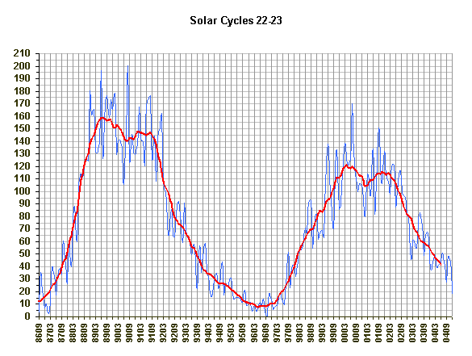

2004年 01.Jan-31.Dec
| Back Issues | Back Issues | Back Issues | Back Issues |
|---|---|---|---|
| Dec.01-31.2004 | Nov.01-30.2004 | Oct.01-31.2004 | Sep.01-30.2004 |
| Aug.01-31.2004 | Jul.01-31.2004 | Jun.01-30.2004 | May.01-31.2004 |
| Apr.01-30.2004 | Mar.01-31.2004 | Feb.01-29.2004 | Jan.01-31.2004 |


[Back Issues Jan-Dec.2004]
TIME:UTC(JST-09:00)
Report from JA1RJU (PM95sq)
31.Dec.2004(15:00c)
*ZL-TV 03:20- 45.24/25/26--
*VK-TV 04:00- 46.172/240 --
DU1EV/B 08:20- 50.008 CW Beacon strong! to 09:15z
30.Dec.2004(15:00b)
*ZL-TV 01:50- 45.240/250 --
29.Dec.2004(15:00b)
*BY-TV 03:40- 49.750 --
*9M-TV 03:40- 48.240 --
28.Dec.2004(15:00b)
*ZL-TV 06:40- 45.250 --
*VK-TV 06:40- 46.240 --
27.Dec.2004(15:00c)
*ZL-TV 04:40- 45.24/25/26--
*VK-TV 04:40- 46.172/240 --
*VK-TV 07:30- 46.172 -- strong!
26.Dec.2004(15:00c)
*ZL-TV 06:00- 45.24/25/26--
25.Dec.2004(15:00b)
*ZL-TV 03:30- 45.24/25/26-- weak
*VK-TV 03:30- 46.172 --
24.Dec.2004(15:00d)
*ZL-TV 01:30- 45.250 -- weak
*VK-TV 01:30- 46.240 -- weak
*ZL-TV 06:00- 45.24/25/26--
*VK-TV 06:30- 46.172/240 --
VK3DUT 06:43 50.110/150 --
VK7RST 07:00- 50.298 CW Beacon
VK7XQ 07:06 50.109 CW
VK2XQ 07:10 50.110 SSB
VK3BQS 07:10 50.110 SSB
23.Dec.2004(15:00b)
*ZL-TV 05:00- 45.24/25/26--
*VK-TV 05:00- 46.172 --
22.Dec.2004(15:00b)
*ZL-TV 02:00- 45.24/25/26--
21.Dec.2004(15:00b)
*VK-TV 05:20- 46.240 --
20.Dec.2004(15:00c)
*ZL-TV 04:00- 45.24/25/26--
*VK-TV 04:00- 46.172 --
*VK-TV 05:00- 46.240 --
19.Dec.2004(15:00d)
*ZL-TV 03:00- 45.24/25/26--
*VK-TV 04:00- 46.172/240 --
ZL3JT 04:11 50.110 CW
ZL3SIX 04:20- 50.040 CW Beacon
VK8RAS 04:45- 50.047 CW Beacon
DU1EV/B 05:20- 50.008 CW Beacon
18.Dec.2004(15:00b)
Report from JA1RJU (QM06cb)
17.Dec.2004(15:00b)
16.Dec.2004(15:00b)
KG6DX 11:36 50.*** JT65A EME(QK23-QM06=no decode)
Report from JA1RJU (PM95sq)
15.Dec.2004(15:00b)
*BY-TV 02:00- 49.750 --
14.Dec.2004(15:00c)
*ZL-TV 03:00- 45.24/25/26--
*VK-TV 03:00- 46.240 --
*VK-TV 05:00- 46.172 -- strong!
VK4RGG 05:20- 50.058 CW Beacon
13.Dec.2004(15:00c)
*VK-TV 02:00- 46.172 --
*BY-TV 10:00- 49.750 --
12.Dec.2004(15:00b)
11.Dec.2004(15:00b)
*VK-TV 04:20- 46.172 --
10.Dec.2004(15:00b)
*ZL-TV 03:30- 45.260 --
*ZL-TV 06:00- 45.240/250 --
*VK-TV 06:00- 46.172 --
09.Dec.2004(15:00b)
*ZL-TV 02:00- 45.24/25/26--
08.Dec.2004(15:00b)
*BY-TV 06:00- 49.750 --
07.Dec.2004(15:00c)
*ZL-TV 01:30- 45.24/25/26--
*BY-TV 02:00- 49.750 --
*VK-TV 02:40- 46.240 --
06.Dec.2004(15:00b)
Report from JA1RJU (QM06cb)
05.Dec.2004(15:00c)
K7BV/1 14:50 50.*** JT65A EME(FN31-QM06=one way)
Report from JA1RJU (PM95sq)
04.Dec.2004(15:00c)
*ZL-TV 03:30- 45.24/25/26--
*VK-TV 03:30- 46.172/240 --
03.Dec.2004(15:00d)
*VK-TV 02:00- 46.240 --
*ZL-TV 03:30- 45.240 --
02.Dec.2004(15:00d)
*VK-TV 03:00- 46.172/240 --
*ZL-TV 03:00- 45.24/25/26--
ZL3JT 03:21 50.110 CW
ZL3AAU 03:22 50.110 CW
ZL3SIX 03:30- 50.040 CW Beacon
*ZL-TV 03:30- 50.750 FM TV-Audio
ZL3JT 03:43 50.110 CW CQ strong!
VK4RGG 04:20- 50.058 CW Beacon
01.Dec.2004(15:00c)
*VK-TV 03:00- 46.172/240 --
*ZL-TV 03:00- 45.24/25/26--
*9M-TV 04:30- 48.240/260 --
30.Nov.2004(15:00c)
*VK-TV 03:00- 46.172/240 --
*ZL-TV 01:50- 45.24/25/26--
*9M-TV 02:10- 48.240/260 --
*BY-TV 02:10- 49.750 --
VK3DUT 02:20 50.110 SSB
VK3DUT 02:40 50.110 SSB
Report from JA1RJU (QM06cb)
29.Nov.2004(15:00c)
VK3AMK 00:53 50.110/103 CW
*ZL-TV 00:55- 45.24/25/26--
Report from JA1RJU (PM95sq)
*BY-TV 05:00- 49.750 --
28.Nov.2004(15:00c)
*VK-TV 01:30- 46.172/240 --
*ZL-TV 02:20- 45.250 --
K7BV/1 08:26 50.*** JT65A EME(FN31-QM06)
27.Nov.2004(15:00c)
*ZL-TV 01:50- 45.240/250 --
Report from JA1RJU (PM95sq)
26.Nov.2004(21:00c)
*ZL-TV 02:50- 45.24/25/26--
*VK-TV 02:50- 46.172/240 --
K7BV/1 20:50 50.*** JT65A EME(FN31-QM06=one way)
25.Nov.2004(15:00c)
*ZL-TV 02:40- 45.24/25/26--
*VK-TV 02:40- 46.172/240 --
24.Nov.2004(15:00c)
*ZL-TV 03:40- 45.240 --
*VK-TV 05:00- 46.172 --
18-23.Nov.2004(00:00a)
◎ "Flash_DX"のリポートは11月23日まで休止します。
SEANET CONVENTION 2004(Bangkok Thailand)
17.Nov.2004(15:00d)
*ZL-TV 02:00- 45.24/25/26--
*BY-TV 03:00- 49.750 --
*VK-TV 03:00- 46.172/240 --
VK4PU 03:51 50.110 CW
VK4RGG 03:54- 50.058 CW Beacon
V73SIX/B 04:20- 50.014 CW Beacon
VK7RST 04:20- 50.298 CW Beacon
VK2RHV 04:35- 50.288 CW Beacon
16.Nov.2004(15:00c)
*VK-TV 03:00- 46.172/240 --
15.Nov.2004(15:00d)
*9M-TV 02:00- 48.240/260 --
C21SIX/B 02:50- 50.038 CW Beacon(QTH RI29LL)
V73SIX/B 03:35- 50.014 CW Beacon
FK8SIX/B 03:35- 50.080 CW Beacon strong!
C21SIX/B 03:35- 50.038 CW Beacon strong!
FK8SIX/B 05:00- 50.080 CW Beacon stiil into PM95
C21SIX/B 05:00- 50.038 CW Beacon still into PM95
14.Nov.2004(15:00d)
*ZL-TV 02:30- 45.24/25/26--
*VK-TV 02:30- 46.172/240 --
VK7RST 04:10- 50.298 CW Beacon
*9M-TV 05:30- 48.240/260 --
YF1OO/B 05:35- 50.042 CW Beacon(QTH Bogor OI33jk)
YB0ASG 05.45 50.110 SSB
YF1OO/B 06:40- 50.042 CW Beacon
YF1OO/B 07:30- 50.042 CW Beacon still good!
13.Nov.2004(15:00c)
*BY-TV 03:00- 49.750 --
*9M-TV 04:30- 48.240/260 --
YF1OO/B 05:35- 50.042 CW Beacon
DU1EV/B 05:40- 50.008 CW Beacon
12.Nov.2004(15:00c)
11.Nov.2004(15:00d)
*BY-TV 01:00- 49.750 --
*9M-TV 01:00- 48.240/260 --
V73SIX/B 01:40- 50.014 CW Beacon
FK8SIX/B 01:40- 50.080 CW Beacon
DS1MFC 03:54 50.110 SSB
10.Nov.2004(15:00d)
*BY-TV 01:30- 49.750 --
*9M-TV 01:30- 48.240/260 --
DU1EV/B 01:30- 50.008 CW Beacon strong!
VR2SIX/B 01:30- 50.075 CW Beacon strong!
(A45XR 01:38 50.110 CW JA6)
V73SIX/B 02:35- 50.014 CW Beacon
DU1EV/B 01:30- 50.008 CW Beacon
*VK-TV 09:50- 46.172 -- Evening type TE
09.Nov.2004(15:00d)
*BY-TV 01:00- 49.750 --
*VK-TV 02:00- 46.172/240 --
VK3DOU 03:06 50.110 CW
VK3DUT 03:30 50.110 SSB
*9M-TV 03:30- 48.240/260 --
VK6RSX 04:00- 50.304 CW Beacon
VK3XQ 04:09 50.110 SSB
VK3DOU 04:09 50.110 SSB
VK2YO 04:11 50.110 SSB
VK3DOU 04:09 50.160 SSB
VK3XQ 04:16 50.160 SSB
VK3DUT 04:22 50.110 SSB
VK6RSX 04:00- 50.304 CW Beacon
VK3DUT 04:54 50.110 SSB
VK4BLK 05:01 50.110 CW
DU1EV/B 07:40- 50.008 CW Beacon strong!
VK6RSX 07:50- 50.304 CW Beacon
XV3AA 07:20 50.130 SSB
VK6JQ 07:43 50.110 CW
08.Nov.2004(16:00e)
Report from JA1RJU (QM06cb)
*BY-TV 01:00- 49.750 --
*9M-TV 01:00- 48.260 --
K7BV/1 15:50 50.*** JT65A EME(FN31-QM06=one way)
Report from JA1RJU (PM95sq)
KH6SX 06:16 50.110 SSB/CW JA2 SC(JA→east/KH6→north)
KH6HME/B 06:30- 50.061 CW Beacon
*ZL-TV 07:30- 45.24/25/26--
*VK-TV 07:30- 46.240 --
*ZL-TV 07:30 50.740/760 FM TV-Audio strong!
ZL2TPY 08:02 50.120 SSB
ZL3NW 08:03 50.110/130 SSB strong!
ZL3SIX/B 08:03- 50.040 CW Beacon
VK7ZOO 08:20 50.150 SSB
VK7RST 08:25- 50.298 CW Beacon
VK7AN 08:28 50.120 SSB
*VK-TV 08:30- 46.240 --
V73SIX/B 09:40- 50.014 CW Beacon
*ZL-TV 09:50- 45.24/25/26--
VK3DUT 11:20 50.110 SSB
VK3SIX 11:25 50.110 CW
VK3XQ 11:35 50.120/125 SSB
Report from JA1RJU (QM06cb)
07.Nov.2004(15:00d)
*VK-TV 02:40- 46.172 --
VK4BLK 04:25 50.110 CW
DU1EV/B 07:40- 50.008 CW Beacon strong!
06.Nov.2004(17:00d)
*VK-TV 02:00- 46.172 --
W1JJ 15:16 50.*** JT65A EME(FN41-QM06)
K7BV/1 15:32 50.*** JT65A EME(FN31-QM06=one way)
05.Nov.2004(15:00c)
*9M-TV 06:00- 48.240/260 -- strong!
*BY-TV 07:00- 49.750 --
W1JJ 14:00 50.*** JT65A EME(FN41-QM06=one way)
Report from JA1RJU (PM95sq)
*ZL-TV 01:00- 45.24/25/26--
*VK-TV 01:00- 46.172/240 --
*BY-TV 01:00- 49.750 --
04.Nov.2004(15:00c)
*ZL-TV 01:30- 45.24/25/26--
*VK-TV 01:30- 46.172 --
*9M-TV 05:00- 48.240/260 -- strong!
VK6RSX 05:35- 50.304 CW Beacon
ZL3SIX/B 05:40- 50.040 CW Beacon
03.Nov.2004(15:00c)
*ZL-TV 02:10- 45.240/250 --
*VK-TV 02:10- 46.172/240 --
02.Nov.2004(15:00c)
*ZL-TV 01:30- 45.24/25/26--
*VK-TV 01:30- 46.172/240 --
01.Nov.2004(15:00d)
*BY-TV 01:00- 49.750 --
*ZL-TV 02:30- 45.24/25/26--
*VK-TV 02:30- 46.240 --
*9M-TV 02:30- 48.240 --
*VK-TV 03:30- 46.172 --
*BY-TV? 06:00- 49.747 -- strong!
VK6RSX 06:40- 50.304 CW Beacon
31.Oct.2004(23:00d)
*BY-TV 00:00- 49.750 --
K7BV/1 00:08 50.*** JT65A EME(FN31-PM95so)
*ZL-TV 00:30- 45.24/25/26--
*VK-TV 01:00 46.172/240 --
VK6RSX 06:20- 50.304 CW Beacon
W1JJ 23:00 50.*** JT65A EME(FN41-QM06=one way)
30.Oct.2004(15:00d)
*VK-TV 03:30 46.172/240 --
*9M-TV 06:00- 48.240/260 --
VK6RSX 06:50- 50.304 CW Beacon
29.Oct.2004(23:00f)
*VK-TV 01:30 46.172/240 --
*ZL-TV 02:30- 45.24/25/26--
VK4RGG 02:50- 50.058 CW Beacon
VK4AHW 03:07 50.110/120 SSB
VK4ADJ 03:08 50.110/130 SSB
VK4YRS 03:16 50.130 SSB
FK8SIX/B 03:20- 50.080 CW Beacon
FK/DJ8NK 03:30 50.110/123 SSB
VK4ZRT 03:35 50.110/150 SSB
VK4JOO 03:39 50.110/140 SSB
VK4CWJ 03:45 50.110 SSB
FK/DJ8NK 03:50 50.109 CW
VK4BLK 03:57 50.100/103 CW
VK4BLK 04:03 50.110 SSB
VK4AHW 04:05 50.110 SSB
VK4RGG 04:30- 50.058 CW Beacon
VK4BLK 04:40 50.110 CW/SSB
DU1EV/B 07:10- 50.008 CW Beacon
*9M-TV 07:30- 48.240/260 --
ZS6NK 22:29 50.*** JT65A EME(KG46-QM06)
Report from JA1RJU (PM95sq)
28.Oct.2004(15:00d)
*ZL-TV 01:30- 45.24/25/26--
*VK-TV 01:30 46.172 --
VK4RGG 04:30- 50.058 CW Beacon
VK4BLK 04:47 50.110 SSB
VK4BLK 04:59 50.110 CW
VK6RSX 11:20- 50.304 CW Beacon
27.Oct.2004(15:00c)
*ZL-TV 01:30- 45.24/25/26--
*VK-TV 01:30 46.172/240 --
*9M-TV 07:30- 48.240/260 --
26.Oct.2004(15:00c)
*VK-TV 01:30 46.172/240 --
FK8SIX/B 02:30- 50.080 CW Beacon
*9M-TV 06:00- 48.240/260 --
VK6RSX 08:20- 50.304 CW Beacon
25.Oct.2004(15:00b)
*VK-TV 02:30 46.172/240 --
Report from JA1RJU (QM06cb)
24.Oct.2004(15:00d)
*ZL-TV 00:30- 45.24/25/26--
*VK-TV 01:50 46.172 --
FK8SIX/B 03:00- 50.080 CW Beacon
VK4ZQ 03:08 50.110 SSB CQ
VK4RGG 03:30- 50.058 CW Beacon
VK4AHW 03:47 50.110/125 SSB
VK4ZQ 03:47 50.110/120 SSB
VK4FNQ 03:55 50.130 SSB
VK4CXQ 04:00 50.106 CW
FK8SIX/B 04:10- 50.080 CW Beacon still good!
VK4ABP/B 04:10- 52.347 CW Beacon
VK4YRS 04:10 50.135 SSB
VK4TZL 04:23 50.140 SSB
W1JJ 06:06 50.*** JT65A EME(FN41-QM06=one way)
23.Oct.2004(15:00c)
IW5DHN 12:50 50.*** JT65A EME(JN53-QM06=one way)
Report from JA1RJU (PM95sq)
22.Oct.2004(15:00c)
*VK-TV 02:00 46.172/240 --
21.Oct.2004(15:00c)
20.Oct.2004(15:00c)
*VK-TV 02:50 46.172 --
19.Oct.2004(15:00c)
*VK-TV 03:10 46.172 --
18.Oct.2004(15:00d)
*VK-TV 02:40 46.172/240 -- strong!
VK4RGG 02:45- 50.058 CW Beacon
FK8SIX/B 03:10- 50.080 CW Beacon
VK4ZQ 03:10 50.120 SSB
VK4ZX 03:29 50.130 SSB
C21SIX/B 04:10- 50.038 CW Beacon
VK4WTN 04:42 50.110/120 SSB
V73SIX/B 05:20- 50.014 CW Beacon
Report from JA1RJU (QM06cb)
17.Oct.2004(15:00e)
W7GJ 00:24 50.*** JT65A EME(DN27-QM06)
*ZL-TV 02:30- 45.24/25/26--
*VK-TV 02:30 46.172/240 -- strong!
VK4RGG 02:50- 50.058 CW Beacon
VK4BLK 03:04 50.110 SSB
ZL4AAA 03:08 50.130 SSB strong!
VK4ZQ 03:13 50.110/120 SSB
VK4WR 03:15 50.110/140 SSB
TX9 03:22 50.123 CW Beacon
TX9 03:49 50.123 SSB split 50.128-138
TX9 04:15 50.123 SSB still good! split 50.138-148
FK8SIX/B 04:20- 50.080 CW Beacon
VK4ZQ 04:36 50.120 SSB
VK4FNQ 04:37 50.115 SSB
TX9 04:40 50.123 SSB still good!
TX9 05:00 50.123 SSB still good!(QRX 05:02z)
16.Oct.2004(15:00d)
*ZL-TV 01:00- 45.240 --
*VK-TV 01:00 46.172/240 --
FK8SIX/B 02:00- 50.080 CW Beacon
VK4ZQ 03:20 50.110 SSB
V73SIX/B 03:20- 50.014 CW Beacon
VK4WTN 03:42 50.125 SSB
*ZL-TV 04:00- 45.24/25/26--
*ZL-TV 04:00- 50.750 -- TV-Audio strong!
V73SIX/B 04:45- 50.014 CW Beacon still good!
VK4ZQ 04:57 50.110 SSB
VK8RAS 05:20- 50.047 CW Beacon
15.Oct.2004(15:00c)
*BY-TV 00:00- 49.750 --
Report from JA1RJU (PM95sq)
14.Oct.2004(15:00c)
*9M-TV 02:00- 48.240 --
*BY-TV 02:00- 49.750 --
*9M-TV 10:00- 48.24/25/26--
*BY-TV 10:00- 49.750 --
13.Oct.2004(15:00c)
*ZL-TV 02:40- 45.24/25/26--
*VK-TV 04:00 46.172 --
*9M-TV 04:00- 48.240/260 --
12.Oct.2004(15:00c)
*VK-TV 02:30 46.172 --
*9M-TV 06:00- 48.240 --
*BY-TV 07:00- 49.750 --
11.Oct.2004(15:00c)
*VK-TV 03:30 46.172 --
10.Oct.2004(15:00b)
*VK-TV 03:30- 46.172/240 --
09.Oct.2004(15:00c)
08.Oct.2004(15:00d)
*VK-TV 02:35- 46.172 --
*VK-TV 03:20- 46.240 --
C21SIX/B 03:55 50.038 CW Beacon
*9M-TV 05:00- 48.240/260 --
*BY-TV 05:00- 49.750 --
9M2TO/B 05:50- 50.005 CW Beacon strong!
DU1EV/B 05:50- 50.008 CW Beacon strong!
DU1EV/B 07:40- 50.008 CW Beacon still strong!
07.Oct.2004(15:00d)
*VK-TV 03:00- 46.172/240 --
VK4PU 03:29 50.110 SSB
VK4RGG/b 03:30- 50.058 CW Beacon
*ZL-TV 03:30- 45.240/250 --
*9M-TV 03:40- 48.240/260 --
VK4NW 03:42 50.110/130 SSB
VK4BLK 03:45 50.110 SSB
V73SIX/B 04:40- 50.0142 CW Beacon
*BY-TV 07:00- 49.750 --
06.Oct.2004(15:00b)
Report from JA1RJU (QM06cb)
05.Oct.2004(15:00b)
ZS6NK 01:50 50.*** JT65A EME(KG46-QM06=one way)
*VK-TV 03:00- 46.172/240 --
04.Oct.2004(15:00b)
W1JJ 01:00 50.*** JT65A EME(FN41-QM06=one way)
03.Oct.2004(15:00d)
ZS6NK 00:01 50.*** JT65A EME(KG46-QM06=one way)
*BY-TV 00:30- 49.750 -- strong!
LA8AV 00:38 50.*** JT65A EME(JO59-PM95so)
*VK-TV 03:00- 46.172 -- strong!
*ZL-TV 04:30- 45.240/250 --
WA4NJP 11:32 50.*** JT65A EME(EM84-QM06)
02.Oct.2004(15:00d)
*BY-TV 01:00- 49.750 --
*VK-TV 04:00- 46.172 -- strong!
01.Oct.2004(23:00d)
V73SIX/B 04:40- 50.0142 CW Beacon
*9M-TV 07:00- 48.240 --
*BY-TV 08:30- 49.750 --
ES6RQ 20:38 50.*** JT65A EME(KO28-PM94)
ES6RQ 22:40 50.*** JT65A EME(KO28-QM06)
30.Sep.2004(15:00c)
29.Sep.2004(15:00c)
*VK-TV 03:30- 46.172 -- strong!
VK4BLK 03:40 50.110 SSB
*VK-TV 04:15- 46.240 --
28.Sep.2004(15:00b)
27.Sep.2004(15:00b)
26.Sep.2004(17:00c)
LY2BAW 16:39 50.*** JT65A EME (KO25-PM94)
25.Sep.2004(16:00d)
LZ3RX 15:45 50.*** JT65A EME (KN12-PM94)
24.Sep.2004(15:00d)
*VK-TV 03:00- 46.172 --
*BY-TV 06:00- 49.750 --
*9M-TV 06:30- 48.260 --
DU1EV/B 06:30- 50.008 CW Beacon strong!
Report from JA1RJU (QM06cb)
23.Sep.2004(15:00c)
*BY-TV 00:00- 49.750 --
22.Sep.2004(15:00c)
21.Sep.2004(15:00e)
*BY-TV 06:00- 49.750 --
*VK-TV 07:00- 46.172 --
*9M-TV 07:00- 48.240 --
9M6SMC 07:10- 50.0145 CW Beacon
XV3AA 08:02 50.130 SSB
3W8A 08:04 50.130 SSB
DU1EV/B 08:10- 50.008 CW Beacon strong!
Report from JA1RJU (PM95sq)
20.Sep.2004(15:00c)
V73SIX/b 03:50- 50.0145 CW Beacon
V73SIX/b 05:30- 50.0145 CW Beacon
19.Sep.2004(15:00d)
*VK-TV 04:20- 46.172 --
V73SIX/b 04:20- 50.0145 CW Beacon
V73SIX/b 05:20- 50.0145 CW Beacon
*BY-TV 07:30- 49.750 --
*9M-TV 07:30- 48.240 --
Report from JA1RJU (QM06cb)
18.Sep.2004(15:00d)
W7GJ 00:00 50.*** JT65A EME (DN27-QM06)
V73SIX/b 04:00- 50.0145 CW Beacon
V73SIX/b 06:00- 50.0145 CW Beacon
OH7PI 09:55 50.*** JT65A EME (KP42-QM06)
17.Sep.2004(15:00c)
16.Sep.2004(15:00d)
VK8RAS 05:30- 50.047 CW Beacon
VK6RSX 06:00- 50.304 CW Beacon
V73SIX/b 06:00- 50.0145 CW Beacon strong!
C21SIX/b 06:20- 50.0385 CW Beacon strong!
V73SIX/b 07:00- 50.0145 CW Beacon (still into QM06)
SM7BAE 09:37 50.*** JT65A EME (JO65-QM06)
Report from JA1RJU (PM95sq)
15.Sep.2004(15:00c)
*BY-TV 01:30- 49.750 --
14.Sep.2004(15:00c)
13.Sep.2004(15:00b)
12.Sep.2004(15:00c)
VK6RSX 11:50- 50.304 CW Beacon
Report from JA1RJU (QM06cb)
11.Sep.2004(15:00a)
IW5DHN 06:57 50.*** JT65A EME (JN53-QM06)
10.Sep.2004(15:00d)
IW5DHN 05:57 50.*** JT65A EME (JN53-QM06)
VK6RSX 08:20- 50.304 CW Beacon
VK6RSX 10:45- 50.304 CW Beacon strong!
VK8MS 12:09 50.110 SSB
Report from JA1RJU (PM95sq)
09.Sep.2004(15:00f)
*VK-TV 03:00- 46.172 -- strong!
*BY-TV 04:30- 49.750 --
VK4RGG 05:30- 50.058 CW Beacon
FK8SIX/B 06:40- 50.080 CW Beacon
VK8RAS 06:50- 50.047 CW Beacon
VK4ABW 08:20 50.110/130 SSB
FK8SIX/B 08:30- 50.080 CW Beacon
VK4ZJR 08:50 50.110/130 SSB
VK4PU 08:50 50.110 SSB
VK4FNQ 09:04 50.110/140 SSB
VK8RAS 09:10- 50.047 CW Beacon
VK6RSX 09:10- 50.304 CW Beacon
VK4ZJR 09:16 50.110 SSB
VK4WDM 09:18 50.110/125 SSB
DU1EV/B 09:30- 50.008 CW Beacon
VK6RSX 09:30- 50.304 CW Beacon
VK4ABP/B 09:30- 52.347 CW Beacon
VK6RSX 13:00- 50.304 CW Beacon
Report from JA1RJU (QM06cb)
08.Sep.2004(15:00b)
07.Sep.2004(15:00b)
06.Sep.2004(15:00b)
Report from JA1RJU (PM95sq)
05.Sep.2004(15:00b)
04.Sep.2004(15:00c)
*BY-TV 01:00- 49.750 --
03.Sep.2004(15:00b)
02.Sep.2004(15:00c)
*ZL-TV 03:00- 45.240/260 --
01.Sep.2004(15:00b)
31.Aug.2004(15:00c)
30.Aug.2004(15:00c)
*BY-TV 00:00- 49.750 --
*BY-TV 09:00- 49.750 --
29.Aug.2004(15:00c)
*BY-TV 02:00- 49.750 --
*BY-TV 10:00- 49.750 --
28.Aug.2004(15:00b)
*BY-TV 12:00- 49.750 --
27.Aug.2004(15:00c)
*BY-TV 05:00- 49.750 --
*9M-TV 06:00- 48.240/260 --
26.Aug.2004(15:00c)
*BY-TV 11:00- 49.750 --
25.Aug.2004(15:00c)
*BY-TV 05:00- 49.750 --
*??-TV 05:00- 48.250 --
24.Aug.2004(15:00c)
*BY-TV 01:00- 49.750 --
*9M-TV 08:30- 48.240/260 --
23.Aug.2004(15:00c)
*BY-TV 01:00- 49.750 --
DU1EV/B 06:40- 50.008 CW Beacon
22.Aug.2004(15:00c)
◎ 8/21(土)-22(日)・Ham Fair 2004
*BY-TV 06:00- 49.750 --
ES6RQ 12:21 50.*** JT65a EME(KO28-PM95so)
21.Aug.2004(15:00b)
◎ 8/21(土)-22(日)・Ham Fair 2004
*BY-TV 00:00- 49.750 --
20.Aug.2004(15:00b)
*BY-TV 00:00- 49.750 --
*9M-TV 02:00- 48.240/260 --
GD0TEP 11:21 50.*** JT65a EME(IO74-PM95so)
19.Aug.2004(15:00c)
*BY-TV 02:00- 49.750 --
*BY-TV 09:00- 49.750 --
*9M-TV 09:00- 48.240/260 --
DU1EV/B 09:50- 50.008 CW Beacon strong!
18.Aug.2004(15:00c)
*BY-TV 03:00- 49.750 --
VK6RSX 07:55- 50.304 CW Beacon strong!
17.Aug.2004(15:00d)
*BY-TV 01:00- 49.750 --
*9M-TV 08:00- 48.240/260 --
*VK-TV 08:00- 46.172 -- weak
16.Aug.2004(15:00d)
*BY-TV 00:00- 49.750 --
*9M-TV 02:00- 48.240/260 --
*VK-TV 08:00- 46.172 --
VK6RSX 08:30- 50.304 CW Beacon
VK4CXQ 09:30 50.110/105 CW
VK6RSX 10:00- 50.304 CW Beacon strong!
15.Aug.2004(15:00c)
*BY-TV 03:00- 49.750 --
*9M-TV 07:00- 48.240/260 --
HL4CAE 08:31 50.100 CW
14.Aug.2004(15:00c)
*BY-TV 00:00- 49.750 --
VR2SIX/B 01:40- 50.075 CW Beacon weak!
13.Aug.2004(15:00c)
*BY-TV 00:00- 49.750 --
*BY-TV 14:00- 49.750 --
*9M-TV 14:00- 48.250 --
12.Aug.2004(15:00c)
*BY-TV 00:00- 49.750 --
11.Aug.2004(15:00b)
*BY-TV 00:00- 49.750 --
10.Aug.2004(15:00c)
*BY-TV 02:00- 49.750 --
*9M-TV 08:00- 48.250/260 --
09.Aug.2004(15:00c)
*BY-TV 00:00- 49.750 --
Report from JA1RJU (QM06cb)
08.Aug.2004(15:00d)
*BY-TV 00:00- 49.750 --
BN0F 04:37 50.115 CW
BN0F 05:08 50.115 SSB
07.Aug.2004(15:00d)
*BY-TV 00:00- 49.750 --
*9M-TV 05:00- 48.240/260 --
DU1EV/B 08:50- 50.008 CW Beacon
VR2SIX/B 08:50- 50.075 CW Beacon
6L0NJ/4 11:35 50.197 SSB
Report from JA1RJU (PM95sq)
06.Aug.2004(15:00c)
*BY-TV 01:30- 49.750 --
*9M-TV 05:30- 48.260 --
*BY-TV 12:30- 49.750 --
05.Aug.2004(15:00d)
*BY-TV 00:00- 49.750 --
*9M-TV 00:00- 48.240/260 --
VR2SIX/B 00:50- 50.075 CW Beacon
VR2SIX/B 04:00- 50.075 CW Beacon (still in)
VR2XLN 04:03 50.110 SSB
*BY-TV 09:00- 49.750 --
04.Aug.2004(15:00d)
*BY-TV 00:00- 49.750 --
DS1MFC 09:59 50.110 SSB
VR2SIX/B 10:40- 50.075 CW Beacon
VR2XLN 10:45 50.110 SSB
03.Aug.2004(15:00d)
*BY-TV 00:00- 49.750 --
*9M-TV 01:00- 48.240/260 --
9M2TO/B 07:20- 50.005 CW Beacon
DU1EV/B 07:20- 50.008 CW Beacon
VR2SIX/B 07:20- 50.075 CW Beacon
*??-TV 07:20- 48.250 -- 230-240deg peak!
DU1EV/B 09:00- 50.008 CW Beacon
VR2SIX/B 09:00- 50.075 CW Beacon
*9M-TV 09:00- 48.24/25/26-- strong!
02.Aug.2004(15:00c)
*BY-TV 00:00- 49.750 --
*9M-TV 09:00- 48.240/260 --
6K2DHP 09:29 50.120 SSB
01.Aug.2004(15:00c)
*BY-TV 00:00- 49.750 --
*BY-TV 15:00- 49.750 -- strong!
31.Jul.2004(15:00c)
*BY-TV 01:00- 49.750 --
30.Jul.2004(15:00b)
*BY-TV 05:00- 49.750 -- weak
29.Jul.2004(15:00b)
*BY-TV 06:00- 49.750 --
28.Jul.2004(15:00b)
*BY-TV 05:00- 49.750 --
27.Jul.2004(15:00b)
*BY-TV 01:00- 49.750 --
26.Jul.2004(15:00b)
*BY-TV 03:00- 49.750 --
Report from JA1RJU (QM06cb)
25.Jul.2004(15:00b)
*BY-TV 00:00- 49.750 --
BN0F 02:00 50.115 CW
Report from JA1RJU (PM95sq)
24.Jul.2004(15:00b)
*BY-TV 00:00- 49.750 --
23.Jul.2004(15:00c)
*BY-TV 00:00- 49.750 --
*9M-TV 02:00- 48.240/260 --
BG9BA 02:39 50.110 CW CQing
DS4CNB/5 02:51 50.110 CW with BG9BA
22.Jul.2004(15:00c)
*BY-TV 00:00- 49.750 --
*9M-TV 01:30- 48.240/260 --
21.Jul.2004(15:00c)
*BY-TV 00:00- 49.750 --
20.Jul.2004(15:00c)
*BY-TV 00:00- 49.750 --
19.Jul.2004(15:00d)
*BY-TV 00:00- 49.750 --
BD2LH 02:30 50.115 SSB
HL5XF 02:45 50.130 SSB
DS1MFC 03:19 50.110/120 SSB
18.Jul.2004(15:00c)
*BY-TV 00:00- 49.750 --
BD4SDB 02:27 50.128 SSB
17.Jul.2004(15:00d)
*BY-TV 00:00- 49.750 --
DS2CYI 02:45 50.110 SSB
HL2FDW 03:42 50.125 CW
16.Jul.2004(15:00d)
*BY-TV 00:00- 49.750 --
*9M-TV 03:00- 48.240/260 -- strong!
9M2TO/B 03:26- 50.005 CW Beacon
VR2SIX/B 03:40- 50.075 CW Beacon
VR2SIX/B 05:10- 50.075 CW Beacon
VR2XLN 05:34 50.115 SSB
DS1PEG 08:15 50.110 CW
15.Jul.2004(15:00b)
*BY-TV 00:00- 49.750 --
14.Jul.2004(15:00c)
*BY-TV 00:00- 49.750 --
*P5-AM 09:00- 48.250 -- (harmonics=9.650MHz×5)
13.Jul.2004(15:00c)
*BY-TV 00:00- 49.750 --
12.Jul.2004(15:00d)
*BY-TV 01:00- 49.750 --
*9M-TV 02:00- 48.240/260 --
HL5XF 04:02 50.110 CW
DU1EV/B 05:00- 50.008 CW Beacon
(K6FV/B 06:40- 50.0689 CW Beacon into PM95/85 & QM08/09)
11.Jul.2004(15:00d)
*BY-TV 01:00- 49.750 --
DS4EXT 03:18 50.110 CW
HL2AVK/2 03:53 50.165 SSB
UA0LE 04:20 50.180 SSB Vladiostok
XV1X 05:50 50.115 SSB
BD2LH 05:56 50.115 SSB
BD2LH 07:06 50.115 SSB strong!
10.Jul.2004(15:00b)
*BY-TV 01:00- 49.750 --
09.Jul.2004(15:00c)
*BY-TV 00:00- 49.750 --
08.Jul.2004(15:00c)
*BY-TV 00:00- 49.750 --
*9M-TV 01:00- 48.240/260 --
VR2SIX/B 01:20- 50.075 CW Beacon
XV1X 02:30 50.110 CW CQ
BG9BA 04:13 50.110/120 CW/SSB
BD2LH 04:22 50.115 SSB strong!
BG9BA 04:36 50.117 SSB strong!
07.Jul.2004(15:00d)
*BY-TV 00:00- 49.750 --
*9M-TV 01:00- 48.240/260 --
VR2SIX/B 01:30- 50.075 CW Beacon
BD2LH 03:45 50.115 SSB CQ
K1SIX 14:08 50.*** JT65A EME(FN43-PM95so)
K1SIX 15:00 50.*** JT65A EME(FN43-PM94)
06.Jul.2004(15:00c)
*BY-TV 00:00- 49.750 --
VR2SIX/B 00:50- 50.075 CW Beacon weak
05.Jul.2004(15:00d)
*BY-TV 00:00- 49.750 --
*9M-TV 01:00- 48.240/260 --
VR2SIX/B 01:00- 50.075 CW Beacon
XV1X 01:25 50.115 SSB
HL9NP 02:25 50.110 SSB CQ
VR2SIX/B 03:50- 50.075 CW Beacon
DS5ISO 04:24 50.105 CW CQ
VR2SIX/B 05:35- 50.075 CW Beacon
XV1X 06:30 50.114 CW CQ
*P5-AM 08:30- 48.250 -- 300deg(harmonics=9.650MHz×5)
BG9BA 09:20 50.115 CW
04.Jul.2004(15:00d)
*BY-TV 00:00- 49.750 --
*9M-TV 01:00- 48.240/260 --
DS1PEG 01:52 50.103 CW
DS2DKW 01:54 50.103 CW
*P5-AM 07:00- 48.250 -- 300deg(harmonics=9.650MHz×5)
HL5BME 08:20 50.190 SSB
03.Jul.2004(15:00d)
*BY-TV 00:00- 49.750 --
*9M-TV 01:00- 48.240/260 --
HL5XF 01:40 50.120 CW
XV1X 01:42 50.115 CW CQ
DU1EV/B 03:20- 50.008 CW Beacon
VR2SIX/B 03:20- 50.075 CW Beacon
02.Jul.2004(15:00e)
*BY-TV 00:00- 49.750 --
*9M-TV 02:00- 48.24/25/26--
XV1X 02:00 50.114/110 CW/SSB
DU1EV/B 02:00- 50.008 CW Beacon
VR2SIX/B 02:30- 50.075 CW Beacon
HL0U 02:32 50.110 CW
DS1CCU 02:32 50.110 CW
9M2TO 02:33 50.117 CW
XV1X 02:50 50.114 CW still good!
9M2TO 02:52 50.117 SSB/CW good sig!
DS1CCU 03:05 50.120 CW
VR2BG 03:20 50.105 CW
9M2TO 03:25 50.117 CW
XV1X 03:30 50.114 CW
HL0U 04:45 50.112 CW
HL5XF 04:45 50.125 SSB
XV1X 04:30 50.120 SSB/CW
DU1EV/B 05:00- 50.008 CW Beacon
DS1CCU 05:55 50.114 CW
DS1CCU 06:22 50.096 PSK31
DU1EV/B 07:00- 50.008 CW Beacon
VR2SIX/B 07:00- 50.075 CW Beacon
01.Jul.2004(15:00e)
*BY-TV 00:00- 49.750 --
DU1EV/B 01:00- 50.008 CW Beacon
VR2SIX/B 01:00- 50.075 CW Beacon
VR2XMT 01:00 50.115/110 SSB
XV1X 01:10 50.120/110 CW
BG9BA 02:19 50.110 CW CQ
VR2SIX/B 02:20- 50.075 CW Beacon
VR2XMT 02:20 50.110 SSB
VR2SIX/B 03:40- 50.075 CW Beacon
VR2UW 03:46 50.110/107 CW
VR2XMT 05:10 50.115 SSB
BD4SDB 05:17 50.135 SSB
BD7OH 05:18 50.130 SSB
9M2TO 07:27 50.117 CW
DS1CCU 07:45 50.117 CW
XV1X 07:58 50.115 CW
XV1X 08:02 50.117 SSB QSO with 9M2TO
XV1X 08:58 50.114 CW
VR2XLN 09:04 50.110 SSB
VR2XMT 09:08 50.110 SSB
VR2SIX/B 09:15- 50.075 CW Beacon
VR2KW 09:16 50.100 CW
XV1X 09:32 50.114 SSB
30.Jun.2004(15:00e)
*BY-TV 00:00- 49.750 --
HL1LTC 05:57 50.120 SSB HL's
DS1CCU 06:35 50.113 CW CQ
5B4FL 06:55 50.100 CW
(SP3RNZ 07:45 50.100 CW JA8.JA6)
HL1LTC 08:05 50.098 CW CQ EU!
(5B4FL 08:08 50.101 CW JA7)
XV1X 08:15 50.100/110 CW
(IK0FTA 08:22 50.088 CW JA1)
XV1X 08:34 50.115 SSB UP5
BD2LH 08:35 50.115 SSB CQ QRM with XV1X
DU1EV/B 08:50- 50.008 -- Beacon
VR2SIX/B 08:50- 50.075 -- Beacon
HL2ST 09:17 50.100 CW
XV1X 09:40 50.085 RTTY
XV1X 10:09 50.084 PSK31
29.Jun.2004(15:00d)
*BY-TV 00:00- 49.750 --
*9M-TV 01:30- 48.240/260 --
VR2SIX/B 02:25- 50.075 -- Beacon
BD2LH 02:38 50.115 SSB CQ
*??-TV 04:30- 48.250 -- 300deg
DU1EV/B 04:30- 50.008 -- Beacon
BD4SDB 05:35 50.110 SSB
*9M-TV 06:30- 48.240/260 --
VR2SIX/B 06:40- 50.075 -- Beacon
VR2UW 07:06 50.110 CW CQ
28.Jun.2004(15:00d)
*BY-TV 00:00- 49.750 --
*9M-TV 06:30- 48.240 --
KG6DX 09:20 50.110/105 CW
27.Jun.2004(15:00b)
◎「第33回東北6SGミーテングin 横手」(秋田県横手市)開催。
WK3D/AH0 05:35 50.120 CW OP/QSL JF2MBF
K6FV/B 06:05- 50.069 -- Beacon
K9JIM/6 06:10 50.090 CW
26.Jun.2004(15:00b)
◎「第33回東北6SGミーテングin 横手」(秋田県横手市)開催。
*BY-TV 00:00- 49.750 --
HL9NP 00:05 50.110 SSB
(5B4FL 05:25 50.110 CW JA5)
(YA1D 05:25 50.110/100 CW JA1-7)
25.Jun.2004(15:00c)
*BY-TV 00:00- 49.750 --
BD2LH 03:20 50.115 SSB CQ
24.Jun.2004(15:00e)
*BY-TV 00:00- 49.750 --
BD2LH 03:41 50.115 SSB CQ
*??-TV 03:30- 48.250 -- 320deg
(5B4FL 03:46 50.110 CW JA1.3)
5B4FL 05:40 50.100 CW
*??-TV 06:00- 48.250/259 -- 320deg
(UT7QF 06:39 50.106 CW JA7)
BD2LH 06:45 50.115 SSB
BD2LH 08:58 50.115 SSB
DS1NSR 09:53 50.125 SSB
23.Jun.2004(15:00d)
*BY-TV 00:00- 49.750 --
BD2LH 03:46 50.115 SSB CQ
UT7QF 06:05 50.112 CW Multi-hop Es Open!
5B4FL 06:11 50.110 CW JA1
(9H1XT 06:16 50.107 CW JA2)
(UU2JJ 06:24 50.107 CW JA2)
(4Z5LA 06:31 50.107 CW JA2)
(OH2PI 06:37 50.107 CW JA2)
(UT7QF 06:05 50.112 CW JA1)
(ES6DO 06:56 50.107 CW JA3)
(OH5LK 06:59 50.114 CW JA3)
(UY5ZZ 07:02 50.091 CW JA2)
(9H1AW 07:02 50.110 CW JA0)
(9H1PA 07:13 50.105 CW JA2)
(OH1VR 07:15 50.112 CW JA1)
22.Jun.2004(15:00f)
*BY-TV 00:00- 49.750 --
*9M-TV 00:00- 48.24/25/26-- strong!
XV1X 00:45 50.110/105 CW
BN0F 01:00 50.114 SSB
BW0IR 01:10 50.120 SSB Hoshino
VR2SIX/B 01:10- 50.075 CW Beacon
VR2XMT 01:16 50.132 SSB
XV1X 01:34 50.120 SSB with BW0IR
XV1X 01:36 50.110 CW
DU1EV/B 02:10- 50.008 CW Beacon
XV1X 02:21 50.110 CW CQ strong!
XV1X 02:26 50.110/115 SSB
XV1X 02:55 50.115 RTTY * JA station can't use this frequency for RTTY.
BW0IR 03:03 50.120 SSB
BD7OH 03:03 50.120 SSB
XV1X 04:40 50.110 CW CQ
VR2XMT 05:35 50.110 SSB
VR2SIX/B 05:35- 50.075 CW Beacon
VR2DXA 06:02 50.110 SSB
BD7OH 06:15 50.125 SSB
VR2ZLH 06:41 50.125 SSB with BD7OH
KG6DX 06:45 50.106 CW/SSB
KG6DX 07:05 50.080 PSK
KG6DX 07:22 50.110 SSB CQ
VR2XMT 08:14 50.110 SSB
JD1YBJ 09:20 50.155 CW strong!
ZS6NK 13:06 50.*** JT65A EME(KG46-PM95so)
21.Jun.2004(15:00d)
*BY-TV 00:00- 49.750 --
HL5XF 04:14 50.110 SSB CQ
6K0HG 04:44 50.110 SSB Es JR6
*9M-TV 06:30- 48.24/25/26--
20.Jun.2004(15:00c)
*BY-TV 00:00- 49.750 -- Es JA8
BD4SDB 08:30 50.1950 SSB strong!
19.Jun.2004(15:00d)
*BY-TV 00:00- 49.750 --
BG9BA 01:46 50.115 CW strong!
BD4SDB 05:08 50.200 SSB
BG5HFH 05:45 50.110 SSB CQ strong!
JD1YBJ 09:12 50.155 CW
18.Jun.2004(15:00c)
*BY-TV 00:00- 49.750 --
BD2LH 08:46 50.115 SSB strong!
BD4SDB 13:21 50.110 SSB CQ
17.Jun.2004(15:00d)
*BY-TV 00:00- 49.750 --
*9M-TV 03:00- 48.24/25/26-- strong!
9M2TO/b 03:38- 50.005 CW Beacon
VR2SIX 05:20- 50.075 CW Beacon
9M2TO/b 05:40- 50.005 CW Beacon
16.Jun.2004(15:00c)
*BY-TV 00:00- 49.750 --
15.Jun.2004(15:00c)
*BY-TV 00:00- 49.750 --
BD2LH 09:02 50.115 SSB CQ
14.Jun.2004(15:00b)
*BY-TV 00:00- 49.750 --
13.Jun.2004(15:00d)
*BY-TV 00:00- 49.750 --
BD2LH 02:31 50.115 SSB CQ
BD2LH 02:31 50.115 SSB
6K2DHP 05:53 50.110/120 SSB
DS1PEG 06:00 50.100 CW
DS2DCM/1 06:00 50.100 CW
DS2DKW 06:09 50.100 CW
12.Jun.2004(15:00c)
*BY-TV 00:00- 49.750 --
11.Jun.2004(15:00b)
*BY-TV 00:00- 49.750 --
10.Jun.2004(15:00b)
*BY-TV 00:00- 49.750 --
09.Jun.2004(15:00d)
*BY-TV 00:00- 49.750 --
DU1EV/B 01:00- 50.008 CW Beacon
VR2SIX 01:00- 50.075 CW Beacon
V73SIX/B 02:25- 50.014 CW Beacon
DS3EXX 04:49 50.164 SSB
DS5KJR 05:40 50.120 CW
HL5XF 06:05 50.125 CW
BD2LH 06:35 50.115 SSB
08.Jun.2004(15:00c)
*BY-TV 00:00- 49.750 --
07.Jun.2004(15:00c)
*BY-TV 01:00- 49.750 --
VR2SIX 02:40- 50.075 CW Beacon
DU1EV/B 06:50- 50.008 CW Beacon
DU1EV/B 09:00- 50.008 CW Beacon still into PM95
06.Jun.2004(15:00d)
*BY-TV 02:00- 49.750 --
BV2B/1 03:47 50.110 SSB
VR2SIX 03:50- 50.075 CW Beacon
HL1JV 04:19 50.110 SSB
BV2KI 04:19 50.110 SSB
BV2B/1 04:20 50.110 SSB
6K2DHP 04:42 50.120 SSB
BG9BA 07:52 50.110 CW
K4RX 13:50 50.*** JT65a EME(EM70-PM95so)
05.Jun.2004(00:00a)
◎「6m Today!」のリポートはお休みします
04.Jun.2004(15:00c)
*BY-TV 01:00- 49.750 --
VR2SIX 12:30- 50.075 CW Beacon
03.Jun.2004(15:00d)
*BY-TV 00:00- 49.750 --
VR2SIX 03:00- 50.075 CW Beacon strong!
VR2XMT 03:35 50.115 SSB
VR2XMT 03:50 50.130 SSB
HL2DWR 05:42 50.110/120 SSB
BD4SDB 13:48 50.110/200 SSB
02.Jun.2004(15:00b)
*BY-TV 00:00- 49.750 --
01.Jun.2004(15:00b)
*BY-TV 00:00- 49.750 --
Report from JA1RJU & 8J1ITU (QM06cb)
31.May.2004(15:00c)
*BY-TV 00:00- 49.750 --
KH0/JA3EGE 08:05 50.110 CW
Report from JA1RJU & 8J1ITU (QM06cb)
30.May.2004(17:00d)
*BY-TV 00:00- 49.750 --
BV3FQ 03:00 50.120 SSB
KL7HBK 06:52 50.110 SSB
(K6FV/B 07:08- 50.069 CW Beacon into JA7)
IW5DHN 16:50 50.196/035 JT65A EME(JN53-QM06=8J1ITU)
Report from JA1RJU & 8J1ITU (QM06cb)
29.May.2004(15:00b)
*BY-TV 08:00- 49.750 --
Report from JA1RJU & 8J1ITU (QM06cb)
28.May.2004(15:00c)
*BY-TV 00:00- 49.750 --
BN0F 01:50 50.110 CW
W7GJ 04:00 50.145/044 JT65A EME(DN27-PM85)
27.May.2004(15:00d)
*BY-TV 00:00- 49.750 --
BN0F 02:00 50.115 CW
BN0F 02:19 50.115 SSB
BG9BA 07:02 50.110 SSB
HL1LTC 07:10 50.110 CW
BN0F 08:32 50.110 SSB
26.May.2004(15:00d)
*BY-TV 00:00- 49.750 --
HL1LTC 03:39 50.110 CW
BD4SDB 05:30 50.110 SSB CQ
HL2NF 06:24 50.110/120 SSB
HL2FDW 06:50 50.110 CW
25.May.2004(15:00c)
*BY-TV 00:00- 49.750 --
BG9BA 02:55 50.110 CW CQ
HL1LTC 03:23 50.110 CW
BG9BA 03:25 50.110 SSB
24.May.2004(15:00d)
*BY-TV 00:00- 49.750 --
(UA0CQ 09:03 50.110 CW JA7)
VR2XMT 14:22 50.110/115 SSB CQ
BD4SDB 14:57 50.110 SSB CQ
Report from JA1RJU & 8J1ITU (QM06cb)
23.May.2004(15:00c)
*BY-TV 00:00- 49.750 --
HL2FDW 02:01 50.110 CW
HL4CEL 02:10 50.110 CW
C21SIX 09:40- 50.038 CW Beacon
VK4RTL 09:40- 50.087 CW Beacon
Report from JA1RJU & 8J1ITU (QM06cb)
22.May.2004(15:00b)
*BY-TV 01:00- 49.750 -- Es JA8
21.May.2004(15:00b)
*BY-TV 00:00- 49.750 -- Es JA6/JR6
(JR6YBR 02:00- 50.0178 CW Beacon) strong!
20.May.2004(15:00c)
*BY-TV 00:00- 49.750 -- Es JR6
VK6RSX 09:27- 50.304 CW Beacon
VK6JQ 09:37 50.110/112 CW strong!
19.May.2004(15:00d)
*BY-TV 01:00- 49.750 --
VK6RSX 10:00- 50.304 CW Beacon
VK4CXQ 10:18 50.110 CW
18.May.2004(15:00d)
*BY-TV 01:00- 49.750 -- Es JA6/JR6
VK6RSX 08:00- 50.304 CW Beacon strong!
VK6JQ 08:11 50.110 CW
VK4RTL 08:15- 50.087 CW Beacon
(A45XR 11:51 50.110 CW JA7)
17.May.2004(15:00c)
*BY-TV 01:00- 49.750 --
KH0/JJ1QKM 08:40 50.130 SSB
16.May.2004(15:00c)
KH0/JJ1QKM 08:25 50.160 SSB
15.May.2004(10:00b)
*BY-TV 03:00- 49.750 --
14.May.2004(15:00c)
*BY-TV 00:00- 49.750 --
13.May.2004(15:00d)
*BY-TV 02:00- 49.750 --
DS4KDB 05:40 50.110 SSB Es JR6
VK4RTL 09:00- 50.087 CW Beacon
VK6RSX 09:00- 50.304 CW Beacon
VK4ZJR 09:11 50.110 SSB
VK6JQ 09:47 50.110 CW
12.May.2004(15:00b)
*BY-TV 05:00- 49.750 --
11.May.2004(10:00b)
*BY-TV 07:00- 49.750 -- JA6 Es
06-10.May.2004(00:00a)
◎「6m Today!」のリポートはお休みします
05.May.2004(15:00c)
*BY-TV 03:30- 49.750 --
BD4SDB 06:37 50.110 SSB
HL1ASH 07:37 50.110 SSB
HL2FDW 07:39 50.114 CW
04.May.2004(15:00c)
*VK-TV 03:40- 46.172 --
*9M-TV 07:00- 48.240/260 --
*BY-TV 07:00- 49.750 --
JD1BLK 07:20 50.120 SSB/CW
Report from JA1RJU & 8J1ITU (QM06cb)
03.May.2004(15:00b)
HL1LTC 08:28 50.195 SSB Es
Report from JA1RJU & 8J1ITU (QM06cb)
02.May.2004(15:00b)
Report from JA1RJU & 8J1ITU (QM06cb)
01.May.2004(15:00d)
*VK-TV 05:40- 46.172 --
VK8RAS 06:00- 50.047 CW Beacon
FK8SIX/B 06:00- 50.0798 CW Beacon
VK6JJ 06:35 50.110 CW
FK8CA 06:42 50.110 SSB
VK6JJ 06:52 50.110/160 SSB
VK8GF 07:03 50.120 SSB
VK6ZKO 07:04 50.110 SSB
VK8TM 07:07 50.130 SSB
VK4KK 07:21 50.140 SSB
VK6ZKO 07:21 50.150 SSB
VK4CXQ 07:28 50.105 CW
VK4RTL 07:30- 50.087 CW Beacon
VK4KDD/VK6 08:05 50.110 SSB
VK4CXQ 08:18 50.110 CW
30.Apr.2004(15:00b)
VK6RSX 06:040- 50.304 CW Beacon
29.Apr.2004(15:00c)
*VK-TV 04:40- 46.172 --
VK8RAS 05:30- 50.0468 CW Beacon
T88JY 08:00 50.140 CW
28.Apr.2004(15:00c)
*BY-TV 07:30- 49.750 --
HL1LTC 08:08 50.110 CW Es strong!
27.Apr.2004(15:00b)
VK6RSX 09:30- 50.304 CW Beacon
VK4KDD/VK6 09:33 50.110 SSB
26.Apr.2004(15:00c)
VK6RSX 08:40- 50.304 CW Beacon
VK4KDD/VK6 09:05 50.110 SSB
25.Apr.2004(15:00c)
VK6RSX 07:40- 50.304 CW Beacon
VK6JJJ 07:55 50.110 SSB
24.Apr.2004(15:00d)
*VK-TV 02:30- 46.172 --
VK8RAS 07:20- 50.0468 CW Beacon
VK6RSX 07:20- 50.304 CW Beacon
VK4KDD/VK6 09:57 50.110 SSB
VK6RSX 09:57- 50.304 CW Beacon
23.Apr.2004(15:00d)
*VK-TV 03:30- 46.172 --
FK8SIX/B 04:18- 50.0797 CW Beacon
VK8RAS 04:25- 50.0468 CW Beacon
VK6RSX 04:45- 50.304 CW Beacon
FK8SIX/B 09:00- 50.0797 CW Beacon
VK4RTL 09:00- 50.087 CW Beacon
VK4ABP 09:00- 52.347 CW Beacon
VK4CXQ 09:19 50.110/105 CW
C21SIX/B 09:20- 50.038 CW Beacon
VK4BLK 09:46 50.110 CW
VK6RSX 09:50- 50.304 CW Beacon
VK4KDD/VK6 10:08 50.110 SSB
22.Apr.2004(10:00c)
*ZL-TV 02:40- 45.24/25/26--
*VK-TV 03:30- 46.172 --
FK8SIX/B 03:45- 50.0797 CW Beacon
21.Apr.2004(15:00b)
*VK-TV 04:00- 46.172 --
20.Apr.2004(15:00b)
*VK-TV 03:00- 46.172 -- weak
19.Apr.2004(15:00d)
*VK-TV 03:00- 46.172 --
VK8RAS 06:00- 50.0468 CW Beacon
VK4RTL 06:00- 50.087 CW Beacon
VK6RSX 06:30- 50.304 CW Beacon
VK4ABP 06:30- 52.347 CW Beacon
VK8RAS 09:00- 50.0468 CW Beacon
VK4RTL 09:00- 50.087 CW Beacon
VK6RSX 09:00- 50.304 CW Beacon
VK4KDD/VK6 06:20 50.110 SSB
VK4ABW 06:23 50.110 SSB
18.Apr.2004(15:00c)
*VK-TV 05:00- 46.172 --
VK6RSX 06:00- 50.304 CW Beacon
VK4KDD/VK6 09:00 50.115 SSB
17.Apr.2004(15:00d)
*VK-TV 04:00- 46.172 --
VK8RAS 04:50- 50.0468 CW Beacon
VK6RSX 04:50- 50.304 CW Beacon
VK8RAS 09:00- 50.0468 CW Beacon
VK4RTL 09:00- 50.087 CW Beacon
VK4FNQ 09:43 50.110 SSB
VK8RAS 09:55- 50.0468 CW Beacon
VK6RSX 09:55- 50.304 CW Beacon
VK4KDD/VK6 10:15 50.110 SSB
16.Apr.2004(10:00d)
*VK-TV 04:00- 46.172 --
VK6RSX 07:20- 50.304 CW Beacon
FK8SIX/B 08:45- 50.0797 CW Beacon
VK4RTL 09:00- 50.087 CW Beacon
VK6RSX 09:00- 50.304 CW Beacon
15.Apr.2004(15:00d)
*VK-TV 07:00- 46.172 --
FK8SIX/B 07:30- 50.0797 CW Beacon
VK6RSX 07:30- 50.304 CW Beacon
VK4CXQ 07:44 50.110 CW
VK8RAS 08:45- 50.0468 CW Beacon
FK8SIX/B 08:45- 50.0797 CW Beacon
VK6RSX 08:45- 50.304 CW Beacon
VK4ABP 08:45- 52.347 CW Beacon
VK4BLK 09:03 50.110 SSB/CW
VK4WDM 09:13 50.110/130 SSB
14.Apr.2004(15:00b)
13.Apr.2004(15:00d)
*VK-TV 04:00- 46.172 --
VK4RTL 04:10- 50.087 CW Beacon
VK6RSX 06:20- 50.304 CW Beacon
*VK-TV 09:00- 46.172 -- strong !
VK8RAS 09:10- 50.0468 CW Beacon
VK4RTL 09:10- 50.087 CW Beacon
VK6RSX 09:10- 50.304 CW Beacon
VK4RTL 09:10- 50.087 CW Beacon
VK4ABP 09:10- 52.347 CW Beacon
VK4FNQ 09:18 50.110/130 SSB
VK4KDD/VK6 09:31 50.110 SSB
DU1EV/B 09:35- 50.008 CW Beacon
VK4CXQ 09:41 50.110/105 CW
VK6RSX 12:00- 50.304 CW Beacon
12.Apr.2004(15:00d)
*VK-TV 03:00- 46.172 --
VK4RTL 03:40- 50.087 CW Beacon
VK6RSX 04:30- 50.304 CW Beacon
VK4KDD/VK6 06:58 50.110 SSB
VK4KDD/VK6 08:40 50.110 SSB
VK6RSX 08:40- 50.304 CW Beacon
11.Apr.2004(15:00e)
*VK-TV 04:00- 46.172 --
VK6RSX 04:40- 50.304 CW Beacon
VK4RTL 05:30- 50.087 CW Beacon
VK6RSX 05:30- 50.304 CW Beacon
VK4ABW 06:00 50.110 CW
VK4ABW 06:16 50.110 SSB
VK4KDD/VK6 06:35 50.110/127 SSB
VK6RSX 07:00- 50.304 CW Beacon
10.Apr.2004(15:00e)
(T33C 02:40 50.110 SSB JA7)
*VK-TV 04:00- 46.172 --
VK6RSX 04:00- 50.304 CW Beacon
VK8RAS 04:30- 50.0468 CW Beacon
VK4KDD/VK6 04:40 50.120/125 SSB
(T33C 05:10 50.097 CW Beacon JA7.0)
T33C 05:42 50.097 CW into PM95
T33C 06:28 50.115 CW UP 3
V73SIX/B 06:40- 50.014 CW Beacon
VK6RSX 06:40- 50.304 CW Beacon
3B9C 07:57 50.115 CW
DU1EV/B 08:25- 50.008 CW Beacon
4F2KWT 08:27 50.115 CW Calling 3B9C
VK4KDD/VK6 09:10 50.115/127 SSB
VK6RSX 10:00- 50.304 CW Beacon
VK4KDD/VK6 10:05 50.115 SSB
09.Apr.2004(15:00e)
*VK-TV 04:00- 46.172 --
FK8SIX/B 05:30- 50.0797 CW Beacon
VK8RAS 06:30- 50.0468 CW Beacon
VK4RTL 06:30- 50.087 CW Beacon
VK6RSX 06:30- 50.304 CW Beacon
3B9C 07:50 50.115 CW "CQ" Beacon
3B9C 09:27 50.115 CW OP.Tony(G0OPD)
3B9C 09:55 50.115 SSB/CW
08.Apr.2004(15:00d)
*VK-TV 03:40- 46.172/240 --
VK8RAS 05:00- 50.0468 CW Beacon
VK4RTL 05:00- 50.087 CW Beacon
VK6RSX 05:00- 50.304 CW Beacon
VK4RTL 09:50- 50.087 CW Beacon
VK6RSX 09:50- 50.304 CW Beacon
07.Apr.2004(15:00c)
*VK-TV 03:00- 46.172 --
VK4RTL 04:20- 50.087 CW Beacon
VK6RSX 04:20- 50.304 CW Beacon
06.Apr.2004(15:00c)
*VK-TV 02:40- 46.172/240 --
FK8SIX/B 02:40- 50.0797 CW Beacon
VK6RSX 05:40- 50.304 CW Beacon
(3B9C 07:58- 50.115 CW CQing JA2-)
1.Apr-5.Apr.2004(00:00a)
◎ 3B9C運用のため"Flash_DX"のリポートは3月13日から4月5日まで休止しました。
Report from JA1RJU (PM95sq)
13.Mar-5.Apr.2004(00:00a)
◎ 3B9C運用のため"Flash_DX"のリポートは4月5日まで休止します。
12.Mar.2004(15:00e)
*VK-TV 04:00- 46.172/240 -- strong!
*ZL-TV 04:00- 45.24/25/26-- strong!
FK8SIX/B 04:20- 50.0797 CW Beacon
VK4RGG 04:20- 50.058 CW Beacon
ZL1VHF 04:20- 50.0433 CW Beacon
VK4AHW 04:23 50.110 SSB
VK4BLK 04:27 50.110/130 SSB
VK3DUT 04:31 50.110 SSB
VK4AHW 05:00 50.110 SSB
ZL1VHF 05:00- 50.0433 CW Beacon
VK3DUT 05:00 50.110 SSB
VK4BLK 05:10 50.110 CW
VK4ABW 06:04 50.110 SSB
VK4FNQ 06:25 50.110 SSB
VK6RSX 06:30- 50.304 CW Beacon
VK4ZRT 06:33 50.110 SSB
VK4AHW 06:33 50.110 SSB
VK4PU 06:34 50.110 SSB
VK8RAS 06:45- 50.0468 CW Beacon
FK8SIX/B 06:45- 50.0797 CW Beacon strong!
11.Mar.2004(15:00d)
*VK-TV 02:40- 46.172 -- strong!
FK8SIX/B 03:30- 50.0797 CW Beacon
VK4AHW 03:34 50.110 SSB
VK2ZXC 03:45 50.110 SSB
FK8SIX/B 04:00- 50.0797 CW Beacon(still good!)
VK4AHW 04:01 50.110/125 SSB
FK8CA ? 04:25 50.110 CW
VK4AHW 04:39 50.110/125 SSB
VK4RGG 04:40- 50.058 CW Beacon
VK6RSX 06:00- 50.304 CW Beacon
VK8RAS 07:05- 50.0467 CW Beacon
10.Mar.2004(15:00c)
*ZL-TV 04:30- 45.240/260 --
*VK-TV 04:30- 46.172 --
09.Mar.2004(15:00c)
*ZL-TV 04:00- 45.250 --
*VK-TV 04:40- 46.172 -- strong!
DU1EV/B 08:00- 50.008 CW Beacon
08.Mar.2004(15:00c)
*VK-TV 03:50- 46.172 -- strong!
*9M-TV 05:30- 48.24/25/26-- strong!
07.Mar.2004(22:00c)
*VK-TV 04:30- 46.172 --
------------------------------------
IW5DHN 20:41 50.066 JT65A EME(JN53-PM95so)
06.Mar.2004(22:00c)
(Nothing Prop.)
------------------------------------
IW5DHN 21:11 50.066 JT65A EME(JN53-QM05)
05.Mar.2004(15:00c)
*VK-TV 03:40- 46.172 --
VK6RSX 07:00- 50.304 CW Beacon
04.Mar.2004(15:00c)
VK6RSX 09:10- 50.304 CW Beacon
03.Mar.2004(15:00c)
*VK-TV 03:50- 46.172 --
VK6RSX 09:30- 50.304 CW Beacon
02.Mar.2004(15:00c)
*VK-TV 04:40- 46.172 --
*9M-TV 04:40- 48.240/260 --
01.Mar.2004(15:00b)
*VK-TV 04:00- 46.172 --
29.Feb.2004(15:00c)
*VK-TV 04:00- 46.172 -- strong!
*9M-TV 04:00- 48.240/260 --
VK8MS 12:05 50.110 SSB
28.Feb.2004(15:00d)
*VK-TV 04:00- 46.172 -- strong!
VK4RGG/B 04:40- 50.058 CW Beacon
VK8RAS/B 04:40- 50.0467 CW Beacon
VK4JSR 04:48 50.110/140 SSB
VK4AHW 04:50 50.120 SSB
VK4TU 04:52 50.110/150 SSB
FK8SIX/B 05:00 50.0796 CW Beacon
VK4BLK 05:09 50.110/130 SSB
VK4ABP/B 05:10- 52.347 CW Beacon
VK4YRS 05:20 50.150 SSB
VK4FNQ 05:25 50.160 SSB
VK4APG 06:10 50.210 SSB (-07:00z F.Out)
27.Feb.2004(15:00c)
*VK-TV 04:10- 46.240 --
*VK-TV 05:00- 46.172 -- strong!
26.Feb.2004(15:00c)
*VK-TV 03:30- 46.172/240 --
VK4BLK 04:48 50.110 CW
VK4BLK 05:07 50.110/140 SSB/CW
VK4FNQ 06:09 50.110 SSB
25.Feb.2004(15:00d)
*VK-TV 04:20- 46.172 --
*9M-TV 07:00- 48.240/260 --
VK8RAS/B 07:10- 50.0467 CW Beacon
9M2TO/B 07:25- 50.005 CW Beacon
VK6RSX/B 08:00- 50.304 CW Beacon
VK8RAS/B 08:00- 50.0467 CW Beacon strong!
24.Feb.2004(15:00c)
*VK-TV 05:00- 46.172/240 --
23.Feb.2004(15:00d)
*ZL-TV 01:20- 45.24/25/26--
*VK-TV 04:10- 46.240 --
*VK-TV 05:20- 46.172/240 -- strong!
*9M-TV 05:20- 48.240/260 --
SM7BAE 10:29 50.031 JT65B EME(JO65-PM95so)
22.Feb.2004(15:00c)
*ZL-TV 00:00- 45.24/25/26--
*VK-TV 03:00- 46.240 --
*VK-TV 05:00- 46.172/240 --
21.Feb.2004(24:00c)
WA4NJP 23:01 50.141/049 JT65B EME(EM84-PM95so)
20.Feb.2004(15:00d)
*ZL-TV 02:50- 45.24/25/26--
*VK-TV 04:30- 46.172/240 --
T88LZ 07:43 50.110 CW (QSL JR1LZK)
*BY-TV 08:00- 49.750 --
VK4BLK 09:07 50.110/120 CW/SSB
19.Feb.2004(15:00c)
*BY-TV 01:00- 49.750 --
ZS6NK 03:20 50.011 JT65B EME(KG46-PM95so)
VK8GF 07:33 50.110/125 SSB
18.Feb.2004(15:00b)
17.Feb.2004(15:00c)
*VK-TV 04:00- 46.172 --
FK8SIX/B 06:10- 50.0796 CW Beacon
VK4AHW 06:28 50.110 SSB
VK4RGG/B 06:30- 50.058 CW Beacon
VK4PU 06:34 50.110 CW
VK4AHW 06:47 50.110/125 SSB
16.Feb.2004(15:00b)
*ZL-TV 03:20- 45.250/260 --
15.Feb.2004(15:00c)
*ZL-TV 03:20- 45.250 --
DU1EV/B 11:15- 50.008 CW Beacon
N7ET/DU7 11:23 50.110 CW
14.Feb.2004(15:00c)
*VK-TV 04:40- 46.172 --
13.Feb.2004(15:00c)
*VK-TV 05:40- 46.172 -- weak
12.Feb.2004(15:00c)
*ZL-TV 03:00- 45.24/25/26--
*VK-TV 04:20- 46.172/240 -- weak
DU1EV/B 06:20- 50.008 CW Beacon
11.Feb.2004(15:00c)
*VK-TV 02:30- 46.240 --
*ZL-TV 03:30- 45.250 -- weak
*VK-TV 03:30- 46.172/240 -- strong!
*BY-TV 07:00- 49.750 -- strong!
10.Feb.2004(24:00c)
*ZL-TV 06:30- 45.250 -- weak
*VK-TV 06:30- 46.172/240 --
SM7BAE 23:35 50.0273 CW EME(JO65-PM95so)
09.Feb.2004(15:00b)
08.Feb.2004(22:00c)
WA4NJP 10:40 50.040/133 JT65B EME(EM84-PM95so)
IW5DHN 21:36 50.037 JT65B EME(JN53-PM95so)
07.Feb.2004(15:00b)
W7GJ 10:10 50.090/190 JT65B EME(DN27-QM06ad,PM85lw)
06.Feb.2004(15:00c)
*VK-TV 06:00- 46.172 --
FK8SIX/B 06:30- 50.0796 CW Beacon
05.Feb.2004(15:00b)
04.Feb.2004(15:00c)
*ZL-TV 02:30- 45.250 --
*ZL-TV 03:30- 45.24/25/26--
03.Feb.2004(15:00d)
*VK-TV 03:30- 46.172/240 --
VK3XQ 05:14 50.110 SSB
VK3AMK 05:16 50.110 SSB
VK8RAS 05:20- 50.0468 CW Beacon
02.Feb.2004(15:00c)
*VK-TV 05:00- 46.172/240 --
*ZL-TV 06:20- 45.250 --
VK8RAS 06:55- 50.0468 CW Beacon
VK8GF 06:56 50.110 SSB CQ
01.Feb.2004(15:00c)
*ZL-TV 03:00- 45.24/25/26--
*VK-TV 03:00- 46.240 --
VK8RAS 05:40- 50.0468 CW Beacon
31.Jan.2004(15:00d)
*VK-TV 04:30- 46.172/240 --
DU1EV/B 08:30- 50.008 CW Beacon
DU1EV/B 09:20- 50.008 CW Beacon again!
DU1/GM4COK 09:26 50.110 CW
DU1/GM4COK 09:45 50.110 SSB CQ strong!
N7ET/DU7 09:52 50.110 CW CQ
30.Jan.2004(16:00e)
*ZL-TV 04:30- 45.240/250 --
*VK-TV 04:30- 46.240 --
*VK-TV 05:00- 46.172 --
VK6RSX 07:50- 50.304 CW Beacon
DU1EV/B 08:30- 50.008 CW Beacon
SM7BAE 15:07- 50.027 JT65B EME(JA1=15:07-15:51z)
29.Jan.2004(15:00b)
28.Jan.2004(15:00c)
*ZL-TV 05:00- 45.24/25/26--
*VK-TV 10:30- 46.172 --
27.Jan.2004(15:00c)
*ZL-TV 03:50- 45.250/260 -- weak
*VK-TV 03:50- 46.240 --
26.Jan.2004(15:00c)
*ZL-TV 06:00- 45.250 -- weak
*VK-TV 06:00- 46.172 --
VK4RTL 06:30- 50.087 CW Beacon
25.Jan.2004(15:00e)
*ZL-TV 04:00- 45.24/25/26--
*VK-TV 05:00- 46.172/240 --
V73SIX/B 05:30- 50.0141 CW
ZL3NW 05:40 50.110 CW
ZL3SIX/B 05:40- 50.0399 CW
ZL3NW 06:00 50.110 CW
FK8SIX/B 06:04- 50.0796 CW strong!
FK8HA 06:10 50.110/130 SSB strong!
V73SIX/B 06:15- 50.0141 CW again
ZL3NW 06:20 50.110 CW
24.Jan.2004(15:00b)
V73SIX/B 06:40- 50.0141 CW
SM7BAE 10:00 50.133/027 JT65B EME(JO65-PM95so)
23.Jan.2004(15:00b)
22.Jan.2004(15:00c)
*VK-TV 03:00- 46.240 --
*VK-TV 03:30- 46.172/240 -- strong!
VK4RGG 05:10- 50.058 CW Beacon
V73SIX/B 05:25- 50.0141 CW Beacon
DU1EV/B 05:45- 50.008 CW Beacon
VK3SY 05:53 50.110 CW
VK4PU 06:02 50.110 CW/SSB
VK4RGG 06:30- 50.058 CW Beacon
21.Jan.2004(15:00c)
*ZL-TV 01:30- 45.250/260 --
*VK-TV 02:50- 46.240 --
*ZL-TV 04:00- 45.24/25/26--
*VK-TV 04:00- 46.172/240 -- strong!
ZL1VHF 04:23- 50.0433 CW Beacon
VK3BQS 05:00 50.110 CW
20.Jan.2004(15:00b)
*VK-TV 03:00- 46.240 --
19.Jan.2004(15:00c)
*BY-TV 01:00- 49.750 --
*VK-TV 06:40- 46.240 --
18.Jan.2004(15:00b)
*ZL-TV 02:00- 45.24/25/26--
17.Jan.2004(15:00c)
*BY-TV 01:40- 49.750 --
*ZL-TV 03:00- 45.24/25/26--
*VK-TV 05:00- 46.172 -- strong!
16.Jan.2004(15:00c)
*ZL-TV 03:40- 45.250 -- weak
*VK-TV 03:50- 46.172/240 -- weak
*VK-TV 06:00- 46.172 -- strong!
15.Jan.2004(15:00b)
14.Jan.2004(15:00c)
*ZL-TV 01:30- 45.24/25/26-- weak
*VK-TV 01:30- 46.240 -- weak
*BY-TV 01:50- 49.750 -- strong!
*VK-TV 05:00- 46.172 -- strong!
13.Jan.2004(15:00c)
*VK-TV 04:30- 46.172/240 -- strong!
VK4RGG 04:50- 50.058 CW Beacon
*ZL-TV 05:30- 45.24/25/26-- weak
HL1LTC 07:06 50.110 SSB CQ
W7GJ 13:45 50.093 JT65B EME(DN27-PM94/PM95so[JA1]=13:30-14:40z)
◎ Japanese government just approved 6m EME as of today.
Worked JH2COZ at 1532Z this morning for first "officially permitted" 6m EME contact with Japan (de W7GJ)
12.Jan.2004(16:00d)
*ZL-TV 01:40- 45.24/25/26--
*VK-TV 01:40- 46.240 --
*VK-TV 03:30- 46.172 -- strong!
VK4RGG 05:05- 50.058 CW Beacon
-------------------------------------------------
W7GJ 15:32 50.093 JT65B EME(DN27-PM85/PM95so)
WA4NJP 15:48 50.*** JT65B EME(EM84-QM05)
11.Jan.2004(15:00c)
*9M-TV 03:00- 48.240/260 --
*BY-TV 03:00- 49.750 --
*ZL-TV 03:30- 45.24/25/26--
*VK-TV 03:30- 46.172 --
V73SIX/B 03:40- 50.014 CW
10.Jan.2004(15:00b)
09.Jan.2004(15:00d)
*ZL-TV 02:30- 45.24/25/26--
*VK-TV 02:30- 46.172/240 --
VK4RGG 03:20- 50.058 CW Beacon
VK4BLK 03:28 50.110 CW
DU1EV/B 03:45- 50.008 CW Beacon
*9M-TV 03:45- 48.240/260 --
*BY-TV 03:45- 49.750 --
DU1EV/B 05:15- 50.008 CW Beacon
08.Jan.2004(15:00c)
*ZL-TV 01:30- 45.24/25/26-- weak
*VK-TV 01:30- 46.172/240 --
07.Jan.2004(15:00c)
*VK-TV 01:30- 46.240 --
06.Jan.2004(15:00c)
*ZL-TV 03:40- 45.260 --
*ZL-TV 04:00- 45.24/25/26--
05.Jan.2004(15:00c)
*ZL-TV 02:00- 45.24/25/26--
*VK-TV 03:00- 46.172 --
04.Jan.2004(15:00d)
*ZL-TV 04:00- 45.24/25/26--
*VK-TV 04:30- 46.172 --
ZL1VHF 05:20- 50.0433 CW Beacon
FK8SIX/B 05:20- 50.0796 CW Beacon
VK4RGG 05:20- 50.058 CW Beacon
VK4GO 05:26 50.110/165 SSB No QSLcard
03.Jan.2004(15:00d)
*ZL-TV 04:00- 45.24/25/26--
ZL3SIX 05:00- 50.0399 CW Beacon strong!
ZL-TV 05:00- 50.740/750 FM TV Audio strong!
ZL1VHF 05:20- 50.0433 CW Beacon
*VK-TV 05:20- 46.172 --
ZL3NW 05:31 50.110 CW CQ
ZL3TIC 05:34 50.110 SSB CQ
ZL3TIC 05:55 50.110/160 SSB
ZL3SIX 06:15- 50.0399 CW Beacon
FK8SIX/B 06:30- 50.0796 CW Beacon QRM with NYP
ZL1VHF 07:10- 50.0433 CW Beacon still open
02.Jan.2004(15:00d)
V73SIX 01:00- 50.0141 CW Beacon
*ZL-TV 02:00- 45.24/25/26--
*VK-TV 02:00- 46.172/240 --
*9M-TV 06:00- 48.240/260 --
9M2TO/B 06:30- 50.005 CW Beacon
01.Jan.2004(15:00c)
*ZL-TV 04:00- 45.250/260 --
*9M-TV 05:00- 48.240/260 --
V73SIX 05:00- 50.0141 CW Beacon
VK8RAS 05:00- 50.0467 CW Beacon
VK8MS 05:15 50.110/140 SSB
| Back Issues | Back Issues | Back Issues | Back Issues |
|---|---|---|---|
| Dec.01-31.2004 | Nov.01-30.2004 | Oct.01-31.2004 | Sep.01-30.2004 |
| Aug.01-31.2004 | Jul.01-31.2004 | Jun.01-30.2004 | May.01-31.2004 |
| Apr.01-30.2004 | Mar.01-31.2004 | Feb.01-29.2004 | Jan.01-31.2004 |